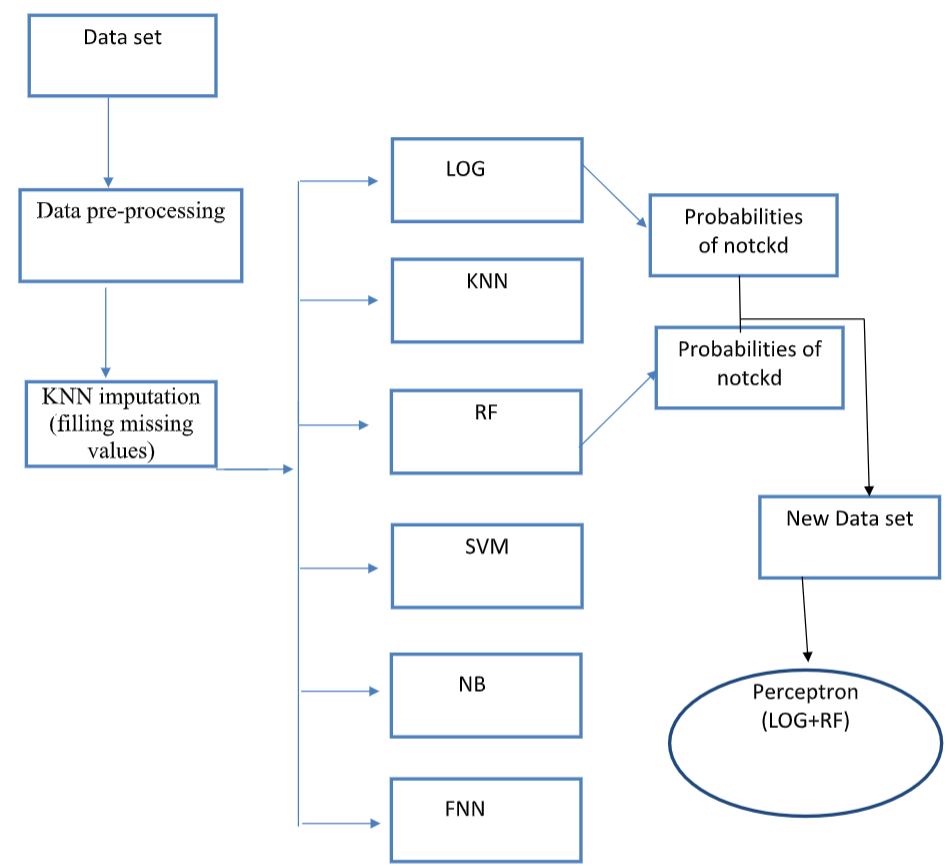
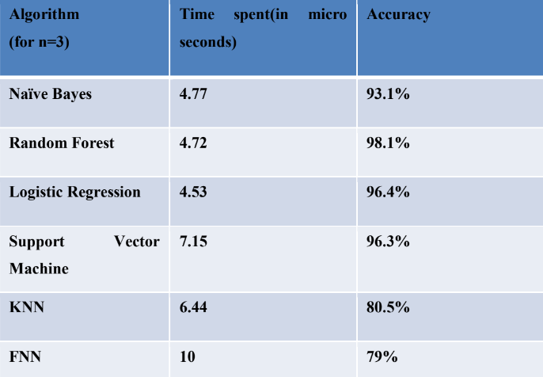
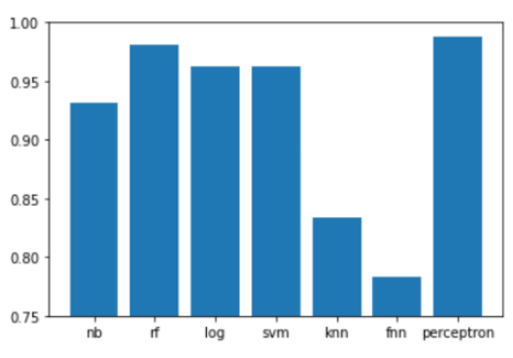
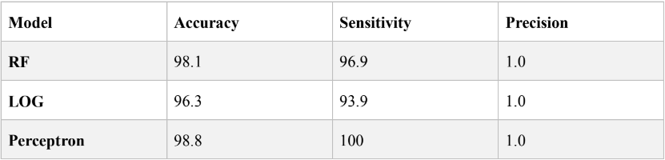

Chronic Kidney Disease Prediction using Machine learning
 Dataset Link
Code Link
Dataset Link
Code Link
Introduction:
A major public health issue which has an impact on approximately 10 percent of the world is chronic kidney disease (CKD). CKD prevalence rate in China is 10.8 percent and that in United States is 10-15 percent. This condition is characterized by a gradual degradation of the function of the renal system, which inevitably results in a complete loss of renal function. In its early stages, CKD does not show noticeable symptoms. Therefore, until the kidney loses about 25 percent of its activity, the illness can not be identified. Furthermore, CKD, with a global effect on the human body, has high morbidity and mortality. It can cause cardiovascular disease to occur. CKD is a pathologic condition that is progressive and permanent. Therefore, it is very important to anticipate and diagnose CKD in its early stages, so that patients can be able to obtain prompt care to deteriorate disease progression. Machine learning is basically a computer program that measures and determines information related to task and obtains the corresponding pattern characteristics. It is therefore a promising approach for CKD diagnosis. Firstly, the information is pre-processed and missing values are treated. The primary aim is to construct an integrated model that combines the best two performing algorithms out of the six algorithms (Logistic Regression, Naive bayes, Random forest, K-nearest neighbor, Feed forward neural network, Support Vector Machine) by using perceptron to boost the performance of component models in CKD diagnosis after KNN imputation has filled the missing values.
Methodology:
The CKD Dataset is obtained from the UCI repository. 400 samples are included in the data collection. Each sample has 24 independent variables or characteristics in this CKD data set (in which 11 of them numerical and remaining 13 are categorical variables) and a dependent or response variable. The response variable has two values namely, ckd (person having the disease) and notckd (person without disease). There are 400 samples and 250 of them are to ckd and 150 of them are notckd. To facilitate processing on a computer, each categorical (nominal) variable has been coded. Normal value and abnormal value are coded to 1 and 0, for the rbc and pc catagories. Similarly present and non- present are coded to 1 and 0, for both pcc and ba categories. For the htn, dm, cad, pe and ane values, yes, no have been coded to 1, 0, respectively. Good and bad are coded to 1 and 0 for the appet.There are many missing values in the dataset. There are only 158 complete instances. KNN imputation is used for fill those missing values. LOG, RF, SVM, KNN, NB and FNN are applied on the CKD data sets and their performances are evaluated. Based on the performance, the best two algorithms were selected for the perceptron model. Logistic regression and Random forest outperformed all other algorithms with accuracies of 96.4% and 98.1% respectively.
Why LOG and RF ?
Performance comparison for various Machine Learning Techniques used in this work are shown in the below bar chart
Confusion matrix of the Random forest, Logistic regression and Perceptron
Conclusion and future work:
The model had a desirable impact to apply this approach to the functional diagnosis of chronic kidney disease. In addition, this methodology may be applied to other disease results, a real medical diagnosis. However, due to the limitations of the conditions in the model setting process, the data samples availability (only 400 samples), and the performance of the model could therefore be restricted. The model does not diagnose the seriousness of the disease since there are only two types of data samples in the data set (ckd, notckd). In future a huge amount of data will be collected in order to improve the efficiency of the model and extend its ability to determine the severity of the disease. Improving the quality and quantity of data improves the model efficiency.